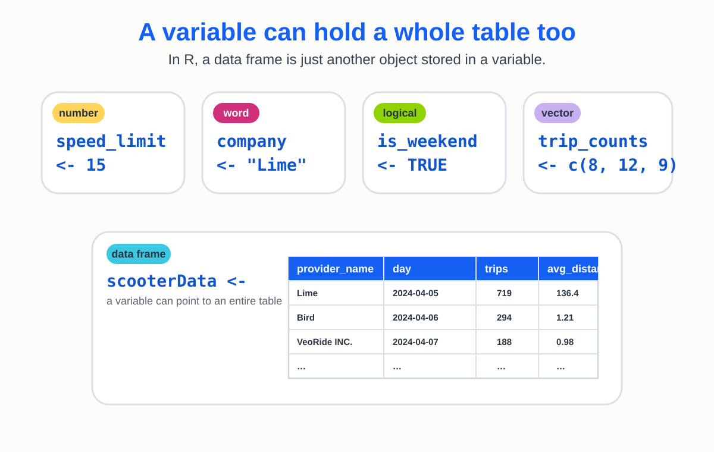
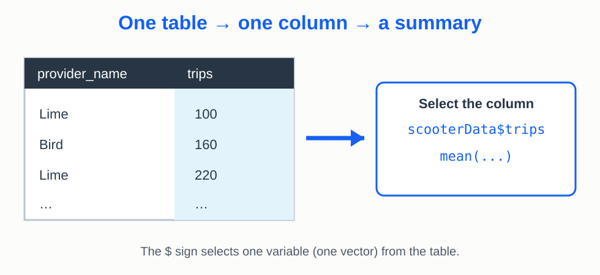
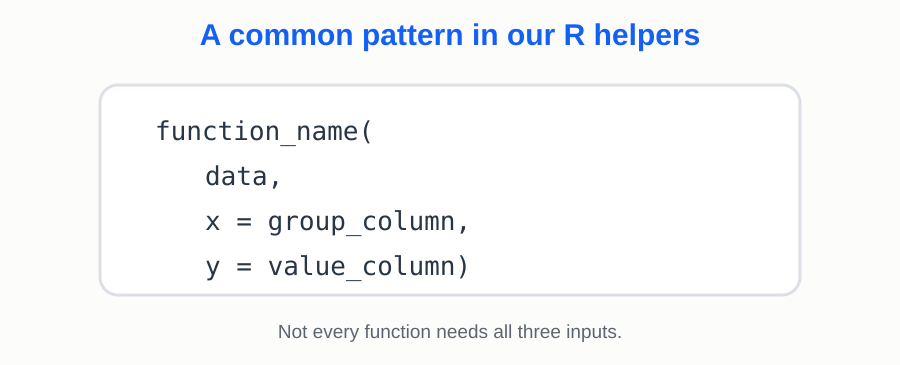
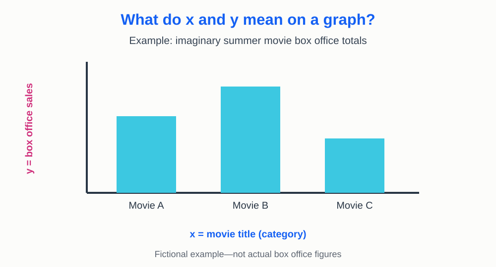

Exploring a Real Dataset
On Day 1 you worked with individual numbers and vectors. Today you'll investigate thousands of real scooter observations from Bloomington.
How this lab works
Follow your TA through the same three steps as Day 1: Watch a demonstration, Try the next problem, then Check your results together. All code boxes share one R session, so variables made in an earlier box are available in later boxes.
Today’s questions: What can scooter data tell us about how scooters are used in Bloomington? Why should we check the data before drawing conclusions?
In this real dataset, one row is one scooter provider on one day, not one individual scooter trip. We will analyze daily totals and averages.
Part 0: Meet the scooter dataset
First, open the full dataset: Download the scooter data (CSV). Open it in a spreadsheet program to see its rows and columns outside R. You do not need to edit it or upload it.
scooter_data. We have already loaded scooter_data
into this environment for you!

A data frame is a table of data stored
in a variable. In a tidy data frame, each
row is one observation, each column is one variable, and
each cell contains one value. In our data, one row is one
scooter provider on one day. Printing scooter_data
would fill the screen with thousands of rows. Instead,
head() shows the first six rows, and dim()
tells us how many rows and columns it has.
R is still loading…
Let's look at the first six rows together. Which
variable identifies the scooter company? Which
variable gives the date? What does a value in
trips represent?
Part 1: Work with columns

We can use the same functions from Day 1—such as mean(),
median(), and sum()—with a dataset. But it
does not make sense to calculate the mean of a whole table that mixes
brand names, dates, and distances. Instead, we usually work with one
variable (one column) at a time. The dollar sign ($)
selects a column. For example, scooter_data$trips is a
vector, so we can use the same functions on it that we used on vectors
on Day 1.
R is still loading…
Explore avg_distance, which records the
average trip distance for each provider-day. Calculate
its mean, median, and maximum. Do any of the values seem
surprising?
R is still loading…
Compare the mean, median, and maximum. What happens to an average when a few observations are extremely large?
Part 3: Find suspicious observations
Real datasets sometimes include measurements that are implausible or incorrectly recorded. Let's look at our data as a graph to understand more about the large maximum value for avg_distance.
We can use the function hist() to create
a histogram of our data. This will show us how the data in
avg_distance is distributed. In a histogram, the x-axis defines
a set of binned intervals, and the y-axis shows how much of our
data falls within each interval.
R is still loading…
We can see that most of the values are small, but there are a few values that are much larger. Let's investigate further.
We can use arguments in our hist() function to customize
the appearance of the histogram. This can help us "zoom in" on the
distribution of the data. We will use xlim to set the
limits of the x-axis and ylim to set the limits of the
y-axis.
R is still loading…
Filtering means keeping only the rows that meet a rule.
Here, we will investigate provider-days with average trip distances above
20 miles and build a new table that keeps rows at or below 20 miles. This is a
practice threshold, not proof that every value above 20 is an error.
The original scooter_data will stay unchanged.
filter(data, condition) is a function from a popular library (package)
in R called dplyr: it makes a new table containing only rows where
the condition is true. We've already loaded this package for you!
R is still loading…
Compute the mean(), median(), and
max() avg_distance of the filtered dataset.
Then compare those values to the same statistics you already
computed above for the original dataset.
Write the code yourself using the comments below.
R is still loading…
Your mean should change much more than your median. That is a clue that a few extreme values were pulling the average upward.
Part 4: Compare scooter companies

data tells R which table,
x tells R the variable on the x-axis, and y
tells R the variable on the y-axis. We generally put the independent
(causal) variable on the x-axis and the dependent (responding) variable
on the y-axis.

In the code below, we'll use two functions: total_by and
average_by. We wrote and loaded these functions for you.
For any R aficianados, our functions are based on the dplyr function
summarize. The custom functions in our lab
create a common interface to R that is simpler for new users!
To compare companies, we want a separate summary for each provider.
Our helper functions use three inputs: data (the table),
x (the groups), and y (the numeric values).
We use the same x and y idea when making a graph.
R is still loading…
Create a new data frame named provider_durations that shows
the average daily duration for each provider.
R is still loading…
Check the distinction between total_by() and average_by().
Why would summing a column of daily averages answer a different question?
Part 5: Show the patterns
A table gives exact values, but a graph makes comparisons easier to see.
The graph helpers also take data, x, and
y, matching the axes in the bar graph example earlier.
R is still loading…
Make a bar graph of provider average number of daily trips using
provider_trips.
Use only bar_graph(), as demonstrated above.
R is still loading…
Which provider has the most scooters available on average? How does that compare to the provider with the most trips? What might explain the difference?
Final reflection
You started with thousands of observations, checked their quality, made a filtered table, summarized by company, and graphed patterns. Think about the difference between having data and making a responsible claim from data.
Save your work
Download a PDF containing your Try code, the output of each activity, your graphs, and written responses. Upload that PDF to the Day 2 assignment in Canvas.
Run each Try activity before downloading. Check that your graphs and responses appear in the PDF.